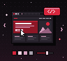

Фронтенд
Фронтенд — это всё, что человек видит и нажимает на сайте: кнопки, формы, меню, анимации. Фронтенд-разработчик превращает макет дизайнера в работающую страницу, которая одинаково удобна на телефоне и на компьютере.
Что делают фронтенд-разработчики
Лендинги и сайты-визитки
Одностраничные сайты компаний, мероприятий и портфолио.
Интернет-магазины
Каталог товаров, фильтры, корзина и оформление заказа.
Веб-приложения
Почта, карты и онлайн-редакторы, которые работают прямо в браузере.
Личные кабинеты
Профиль, настройки, история заказов и таблицы с данными.
Языки и инструменты
Начни с HTML и CSS — первую страницу можно сделать в первый же вечер. Нажми на ячейку, чтобы узнать подробности.
Что дальше